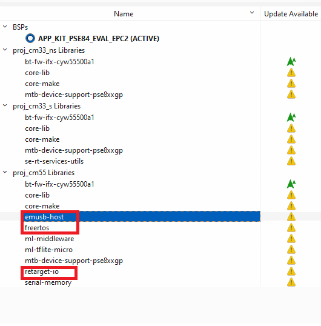
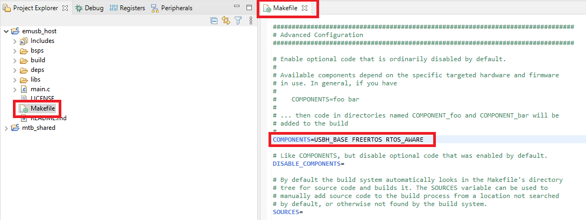
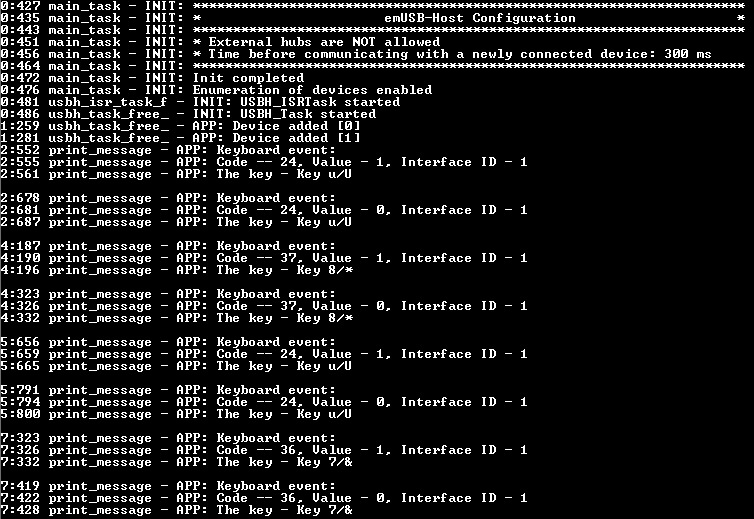

emUSB-Host is a CPU-independent USB Host stack. emUSB-Host is a high-performance library that has been optimized for speed, versatility and small memory footprint. Infineon has licensed emUSB-Host from SEGGER and offers it for free to its customers. This Middleware library provides emUSB-Host in the form of pre-build libraries.
Features:
- High performance
- Small footprint
- No configuration required
- Control, bulk, interrupt and isochronous transfers
- Very simple host controller driver structure
- Support for external USB hub devices
- Support for devices with alternate settings
- Support for multi-interface devices
- Support for multi-configuration devices
Supported USB Device Drivers/Classes:
- BULK Device Driver
- CCID Device Driver
- CDC Device Driver
- CP210X Device Driver
- FT232 Device Driver
- Human Interface Devices (HID) class
- MIDI Device Driver
- Mass Storage Device (MSD) class
- MTP Device Driver
- Printer class
Device families supported by the Middleware:
General Description
This manual provides only the basic concepts of emUSB-Host and integration specifics of the emUSB-Host into ModusToolbox flow. For a detail description of the emUSB-Host features, implementation, and APIs, refer to: SEGGER emUSB-Host User Guide & Reference Manual.
The Quick Start Guide is available in this API Reference Guide.
emUSB-Host consists of the following layers:
- The driver for hardware access
- The emUSB-Host core
- The USB class driver
emUSB-Host and the USB class drivers are device-independent, while the driver for hardware access is applicable only for one device family. The driver is selected in the USBH_X_Config() function, the template of implementation of USBH_X_Config() is in the Config folder.
The drivers for emUSB-Host can support not all available features and may need to be configured in a special manners, refer to the: SEGGER emUSB-Host User Guide & Reference Manual Host controller specifics chapter.
Supported Drivers by the Device family
| Device family | Drivers | Function to add driver |
| CAT1A | Cypress PSoC 6 driver | USBH_Cypress_PSoC_Add() |
| CAT3 | Synopsys DWC2 driver | USBH_XMC4xxx_FS_Add() |
- Note
- For the function description, refer to the: SEGGER emUSB-Host User Guide & Reference Manual Host controller specifics chapter.
The emUSB-Host is provided in the form of pre-build libraries. The pre-build library is selected automatically based on configuration of Application project.
The emUSB-Host includes an OS abstraction implemented by abstraction-rtos, so this Middleware can be used with any RTOSes supported by abstraction-rtos. The RTOS is required for the emUSB-Host operation.
The hardware dependency files are presented in export/Config directory:
- One common file responsible for the debug message output
- Device-specific files for the hardware configuration of each supported device family
Also, the emUSB-Host/Device personality is present in the Device-configurator for simplify routine of configuration clocks and pins for USB IP block operation. The personality is a part of mtb-pdl-cat1 for CAT1A devices and mtb-xmclib-cat3 for CAT3 libraries.
The Quick Start Guide
To set up emUSB-Host for Human Interface Devices (HID), follow the below- described steps. This code snippets will try to enumerate a connected mouse or keyboard and output data about a pressed key or mouse movements and clicks. The current snippet is based on SEGGER sample application.
STEP 1: Add the emUSB-Host middleware.
- Launch the ModusToolbox Library Manager, click Add Library button and select the next libraries: emUSB-Host and FreeRTOS middleware. This step is required only if the ModusToolbox IDE is used. Otherwise, ensure include the emUSB-Host middleware in your project.

- Note
- To use the terminal output, add retarget-io middleware from the Library Manager.
Open Makefile of the project. Add USBH_BASE, FREERTOS and RTOS_AWARE to the COMPONENTS section of the Makefile.

- Warning
- Typically, the default interrupt priority-configuration from the usbd_config.c file will work with the default FreeRTOS config file. For a malfunction USB project, ensure that the USB interrupt priority is aligned with MAX_API_CALL_INTERRUPT_PRIORITY. See Using emUSB-Host in an RTOS Environment.
STEP 2: Configure pins and clocks for emUSB-Host.
CAT1A Devices:
- Launch the ModusToolbox Device Configurator and switch to the Peripherals tab (#1.1).
- Enable the USB personality under Communication (#1.2) and select emUSB-Host/Device 1.0 personality (#1.3).
- Ensure that USB mode is Host (#1.4) and the Clock is connected to CLK_HF3 (#1.5).
Switch to the System tab (#2.1).
- Note
- The clocking system can be different between devices.
- Enable the clock source which has the accuracy +/-0.05% (it could be ECO - case (#2.2)).
- If your device supports more than one PLL, select one. Enable the selected PLL and set a frequency of 48 MHz (#2.3).
- Note
- Select the enabled source clock with accuracy +/-0.05% into the PATH_MUX section of the selected PLL (#2.4).
- Select the CLK_HF3 USB clock (#2.5). Assign the source clock to the CLK_PATH connected to the configured previously PLL.
- If the Power personality is enabled, the System Idle Power Mode option must be Active, or CPU Sleep.
Select File->Save to generate initialization code.
- Note
- Some boards must be additionally configured to select the USB-Host connector. Refer to applicable board User Guide.
-
For example, for the CY8CKIT-062-WIFI-BT kit, set P13_2 to High level.
CAT3 Devices:
- Launch the ModusToolbox Device Configurator and switch to the Peripherals tab (#1.1).
- Enable the USB personality under Communication (#1.2).
- Select the USB mode as Host (#1.3).
- Select the Drive Bus connection (#1.4).
- Follow the instructions in the bottom window to set up the clock source for USB. The USB clock source configuration must look like the configuration on the image below.
- Note
- You can also use System PLL instead USB PLL as a source for USBDIV.
-
Recommended: set the highest frequency of System PLL Clock -> CPU Clock for proper work of USB functionality.
- Select File->Save to generate initialization code.
STEP 3: Write the code in main.c.
- Include headers to get access to the emUSB drivers, retarget-io and FreeRTOS.
#include "cybsp.h"
#include "cy_retarget_io.h"
#include "USBH.h"
#include "USBH_HID.h"
#include "FreeRTOS.h"
#include "task.h"
#include "event_groups.h"
- Define the RTOS memory parameters and event bits for the mouse and keyboard HID events.
#define USB_MAIN_TASK_MEMORY_REQ (500U)
#define USB_ISR_TASK_MEMORY_REQ (500U)
#define PRINT_TASK_MEMORY_REQ (500U)
#define USB_TRIGGER_MOUSE_MESSAGE (0x1U)
#define USB_TRIGGER_KEYBOARD_MESSAGE (0x2U)
- Add a keyboard code array to connect to the keyboard:
static const char* key_string[] =
{
"Reserved/(no event indicated)",
"Key ErrorRollOver ",
"Key POSTFail ",
"Key ErrorUndefined ",
"Key a/A ",
"Key b/B ",
"Key c/C ",
"Key d/D ",
"Key e/E ",
"Key f/F ",
"Key g/G ",
"Key h/H ",
"Key i/I ",
"Key j/J ",
"Key k/K ",
"Key l/L ",
"Key m/M ",
"Key n/N ",
"Key o/O ",
"Key p/P ",
"Key q/Q ",
"Key r/R ",
"Key s/S ",
"Key t/T ",
"Key u/U ",
"Key v/V ",
"Key w/W ",
"Key x/X ",
"Key y/Y ",
"Key z/Z ",
"Key 1/! ",
"Key 2/@ ",
"Key 3/# ",
"Key 4/$ ",
"Key 5/% ",
"Key 6/^ ",
"Key 7/& ",
"Key 8/* ",
"Key 9/( ",
"Key 0/) ",
"Key Return (ENTER) ",
"Key ESCAPE ",
"Key DELETE(Backspace) ",
"Key Tab ",
"Key Spacebar ",
"Key -/(underscore) ",
"Key =/+ ",
"Key [/{ ",
"Key ]/} ",
"Key \\/| ",
"Key Non-US #/~ ",
"Key ;/: ",
"Key Apostrophe/Quotation mark",
"Key GraveAccent/Tilde ",
"Key,/< ",
"Key ./> ",
"Key //? ",
"Key Caps Lock ",
"Key F1 ",
"Key F2 ",
"Key F3 ",
"Key F4 ",
"Key F5 ",
"Key F6 ",
"Key F7 ",
"Key F8 ",
"Key F9 ",
"Key F10 ",
"Key F11 ",
"Key F12 ",
"Key PrintScreen ",
"Key Scroll Lock ",
"Key Pause ",
"Key Insert ",
"Key Home ",
"Key PageUp ",
"Key Delete Forward ",
"Key End ",
"Key PageDown ",
"Key RightArrow ",
"Key LeftArrow ",
"Key DownArrow ",
"Key UpArrow ",
"Keypad NumLock/Clear ",
"Keypad / ",
"Keypad * ",
"Keypad - ",
"Keypad + ",
"Keypad ENTER ",
"Keypad 1/End ",
"Keypad 2/Down Arrow ",
"Keypad 3/PageDn ",
"Keypad 4/Left Arrow ",
"Keypad 5 ",
"Keypad 6/Right Arrow ",
"Keypad 7/Home ",
"Keypad 8/Up Arrow ",
"Keypad 9/PageUp ",
"Keypad 0/Insert ",
"Keypad ./Delete ",
"Key Non-US \\/| ",
"Key Application ",
"Key Power ",
"Keypad = ",
"Key F13 ",
"Key F14 ",
"Key F15 ",
"Key F16 ",
"Key F17 ",
"Key F18 ",
"Key F19 ",
"Key F20 ",
"Key F21 ",
"Key F22 ",
"Key F23 ",
"Key F24 ",
"Key Execute ",
"Key Help ",
"Key Menu ",
"Key Select ",
"Key Stop ",
"Key Again ",
"Key Undo ",
"Key Cut ",
"Key Copy ",
"Key Paste ",
"Key Find ",
"Key Mute ",
"Key Volume Up ",
"Key Volume Down ",
"Key Locking CapsLock ",
"Key Locking NumLock ",
"Key Locking ScrollLock ",
"Keypad Comma ",
"Keypad Equal Sign ",
"Key International1 ",
"Key International2 ",
"Key International3 ",
"Key International4 ",
"Key International5 ",
"Key International6 ",
"Key International7 ",
"Key International8 ",
"Key International9 ",
"Key LANG1 ",
"Key LANG2 ",
"Key LANG3 ",
"Key LANG4 ",
"Key LANG5 ",
"Key LANG6 ",
"Key LANG7 ",
"Key LANG8 ",
"Key LANG9 ",
"Key Alternate Erase ",
"Key SysReq/Attention ",
"Key Cancel ",
"Key Clear ",
"Key Prior ",
"Key Return ",
"Key Separator ",
"Key Out ",
"Key Oper ",
"Key Clear/Again ",
"Key CrSel/Props ",
"Key ExSel ",
"Keypad 00 ",
"Keypad 000 ",
"Thousands Separator ",
"Decimal Separator ",
"Currency Unit ",
"Currency Sub-unit ",
"Keypad ( ",
"Keypad ) ",
"Keypad { ",
"Keypad } ",
"Keypad Tab ",
"Keypad Backspace ",
"Keypad A ",
"Keypad B ",
"Keypad C ",
"Keypad D ",
"Keypad E ",
"Keypad F ",
"Keypad XOR ",
"Keypad ^ ",
"Keypad % ",
"Keypad < ",
"Keypad > ",
"Keypad & ",
"Keypad && ",
"Keypad | ",
"Keypad || ",
"Keypad : ",
"Keypad # ",
"Keypad Space ",
"Keypad @ ",
"Keypad ! ",
"Keypad Memory Store ",
"Keypad Memory Recall ",
"Keypad Memory Clear ",
"Keypad Memory Add ",
"Keypad Memory Subtract ",
"Keypad Memory Multiply ",
"Keypad Memory Divide ",
"Keypad +/- ",
"Keypad Clear ",
"Keypad Clear Entry ",
"Keypad Binary ",
"Keypad Octal ",
"Keypad Decimal ",
"Keypad Hexadecimal ",
"Key LeftControl ",
"Key LeftShift ",
"Key LeftAlt ",
"Key Left GUI ",
"Key RightControl ",
"Key RightShift ",
"Key RightAlt ",
"Key Right GUI "
};
Add the mouse code to connect to the mouse:
static const char* btnState_string[] =
{
"No click",
"Left Button click",
"Right Button click",
"Reserved/(no event indicated)",
"While Button click"
};
- Create a structure prototype for tracking the status of keyboard and mouse events.
typedef struct usb_hid_status
{
USBH_HID_MOUSE_DATA mouse_data;
USBH_HID_KEYBOARD_DATA keyboard_data;
} usb_hid_status_t;
- Declare the emUSB-Host HID global variables
static USBH_NOTIFICATION_HOOK usbh_hid_notification;
static uint32_t usbh_not_used_context;
static EventGroupHandle_t hid_event;
static usb_hid_status_t usb_hid_status;
- Add functions for two mandatory tasks for the emUSB-Host functionality:
static void usbh_task_free_rtos(void* arg)
{
(void)arg;
USBH_Task();
for (;;)
{
USBH_Logf_Application("Error: USBH_Task() end execution\n\r");
}
}
static void usbh_isr_task_free_rtos(void* arg)
{
(void)arg;
USBH_ISRTask();
for (;;)
{
USBH_Logf_Application("Error: USBH_ISRTask() end execution\n\r");
}
}
- Create a callback function for the device Add/Remove notification:
static void new_device_notify(void* pContext, U8 DevIndex, USBH_DEVICE_EVENT Event)
{
(void)pContext;
switch (Event)
{
case USBH_DEVICE_EVENT_ADD:
USBH_Logf_Application("Device added [%d]", DevIndex);
break;
case USBH_DEVICE_EVENT_REMOVE:
USBH_Logf_Application("Device removed [%d]", DevIndex);
break;
default:
USBH_Logf_Application("Invalid event [%d]", DevIndex);
break;
}
}
- Add callback functions for tracking the status of mouse and keyboard events:
static void mouse_event(USBH_HID_MOUSE_DATA* pMouseData)
{
usb_hid_status.mouse_data.xChange = pMouseData->xChange;
usb_hid_status.mouse_data.yChange = pMouseData->yChange;
usb_hid_status.mouse_data.WheelChange = pMouseData->WheelChange;
usb_hid_status.mouse_data.ButtonState = pMouseData->ButtonState;
usb_hid_status.mouse_data.InterfaceID = pMouseData->InterfaceID;
(void)xEventGroupSetBits(hid_event, USB_TRIGGER_MOUSE_MESSAGE);
}
static void keyword_event(USBH_HID_KEYBOARD_DATA* pKeyData)
{
usb_hid_status.keyboard_data.Code = pKeyData->Code;
usb_hid_status.keyboard_data.Value = pKeyData->Value;
usb_hid_status.keyboard_data.InterfaceID = pKeyData->InterfaceID;
(void)xEventGroupSetBits(hid_event, USB_TRIGGER_KEYBOARD_MESSAGE);
}
- Create a function for printing mouse and keyboard events tasks:
static void print_message(void* arg)
{
(void)arg;
EventBits_t uxBits;
for (;;)
{
uxBits = xEventGroupWaitBits(hid_event,
USB_TRIGGER_MOUSE_MESSAGE | USB_TRIGGER_KEYBOARD_MESSAGE, true,
false, portMAX_DELAY);
if ((uxBits & USB_TRIGGER_MOUSE_MESSAGE) == USB_TRIGGER_MOUSE_MESSAGE)
{
USBH_Logf_Application("Mouse event:");
USBH_Logf_Application(
"X change - %d\n\rY change - %d\n\rWheel change - %d\n\rButton state - %d\n\rInterface ID - %d",
usb_hid_status.mouse_data.xChange,
usb_hid_status.mouse_data.yChange,
usb_hid_status.mouse_data.WheelChange,
usb_hid_status.mouse_data.ButtonState,
usb_hid_status.mouse_data.InterfaceID);
USBH_Logf_Application("The button - %s\n\r", btnState_string[usb_hid_status.mouse_data.ButtonState]);
}
else if ((uxBits & USB_TRIGGER_KEYBOARD_MESSAGE) == USB_TRIGGER_KEYBOARD_MESSAGE)
{
USBH_Logf_Application("Keyboard event:");
USBH_Logf_Application("Code -- %d, Value - %d, Interface ID - %d",
usb_hid_status.keyboard_data.Code,
usb_hid_status.keyboard_data.Value,
usb_hid_status.keyboard_data.InterfaceID);
if (usb_hid_status.keyboard_data.Code > sizeof(key_string) / sizeof(char*))
{
USBH_Logf_Application("The key - Invalid code\n\r");
}
else
{
USBH_Logf_Application("The key - %s\n\r", key_string[usb_hid_status.keyboard_data.Code]);
}
}
}
}
- Create a main_task() function:
void main_task(void* arg)
{
(void)arg;
retarget_io_init();
USBH_Init();
xTaskCreate(usbh_isr_task_free_rtos,
"usbh_isr_task_free_rtos",
USB_ISR_TASK_MEMORY_REQ,
NULL,
configMAX_PRIORITIES - 1,
NULL);
xTaskCreate(usbh_task_free_rtos,
"usbh_task_free_rtos",
USB_MAIN_TASK_MEMORY_REQ,
NULL,
configMAX_PRIORITIES - 2,
NULL);
xTaskCreate(print_message,
"print_message",
PRINT_TASK_MEMORY_REQ,
NULL,
configMAX_PRIORITIES - 3,
NULL);
hid_event = xEventGroupCreate();
CY_ASSERT(hid_event != NULL);
USBH_HID_Init();
USBH_HID_AddNotification(&usbh_hid_notification,
new_device_notify,
(void*)&usbh_not_used_context);
USBH_HID_SetOnMouseStateChange(mouse_event);
USBH_HID_SetOnKeyboardStateChange(keyword_event);
for (;;)
{
vTaskDelay(1000U);
}
}
Initialize retarget-io to use the debug UART port:
For CAT1A devices:
static void retarget_io_init(void)
{
cy_rslt_t result;
result = cy_retarget_io_init(CYBSP_DEBUG_UART_TX, CYBSP_DEBUG_UART_RX, CY_RETARGET_IO_BAUDRATE);
if (CY_RSLT_SUCCESS != result)
{
CY_ASSERT(0);
}
}
For CAT3 devices:
static void retarget_io_init(void)
{
cy_rslt_t result;
result = cy_retarget_io_init(CYBSP_DEBUG_UART_HW);
if (CY_RSLT_SUCCESS != result)
{
XMC_ASSERT(0, "cy_retarget_io_init returns error status");
}
}
- Create a FreeRTOS task of the main_task() function into main():
xTaskCreate(main_task, "main_task", 500U, NULL, configMAX_PRIORITIES - 1, NULL);
vTaskStartScheduler();
STEP 4: Check the emUSB-Host workability.
- Build and program your project.
- Open the terminal and set baud rate 115200.
- Connect the mouse or keyboard to the USB-Host connector of the board and observe log-messages of the HID device status.

Configuration Considerations
This section explains the details of the emUSB-Host configuration.
Hardware-dependent Configuration
The hardware resources (Pins, clocks, interrupts) required for USB must be configured before the start of USB operation before calling USBH_Init() or in USBH_X_Config(). Interrupts must be configured in the USBH_X_Config() function.
For CAT1A devices, the USB hardware does not control the power on VBUS line. This feature is essential for some cases, so, the appropriate logic should be implemented on the Application side. For some evaluation boards, this logic is already implemented - typically, an additional MCU pin controls VBUS power. To allow emUSB-Host control power (enable or disable) on VBUS line, register a callback function by USBH_SetOnSetPortPower().
For the CAT3 device, the power control on VBUS line is handled by the USB IP block through a special Drive VBUS pin. To drive the VBUS, it requires an external pump enabled through the output signal of the Drive VBUS pin. As a result, additional hardware configuration is required while the callback function registered by USBH_SetOnSetPortPower() is not needed. Typically, the Drive VBUS pin can be configured by the USB personality.
The implementation template of USBH_X_Config() is provided for each device category in the Config directory under COMPONENT_CATx. This template is automatically copied into your project when middleware is added to project. This template does not include the configuration of clock and pins required for USB operation.
The template file define USBH_ALLOC_SIZE macro for the size of the memory pool. The size of memory is selected to satisfy RAM usage of Driver and a few connected devices, to provide the best experience for running code examples and evaluating the emUSB-Host software for the widest range of boards. Update this value with the optimal memory pool size (strongly recommended) for the application to find the balance between the memory consumption and features support. For details on selecting the optimal memory pool size, refer to the SEGGER emUSB-Host User Guide & Reference Manual Memory pools chapter.
- Warning
- For CAT1A, the template file also configures a pin responsible for enabling/disabling power to connected USB devices by the VBUS line. The default value of the pin number is selected only for the CY8CKIT-062-WIFI-BT kit (CAT1A) and must be modified for other boards.
For details on Hardware Dependent Configuration, refer to the - SEGGER emUSB-Host User Guide & Reference Manual.
USB Pins Configuration
CAT1A Devices Family
The D+ and D- pins must be configured for USB operation. The emUSB-Host/Device personality in the Device Configurator allows for easy configuration of the pins. Otherwise, the pins can be configured manually by PDL APIs.
The following snippet initializes GPIO pins for USB operation by mtb-pdl-cat1 APIs.
Cy_GPIO_Pin_FastInit(USBDP_PORT, USBDP_PIN, CY_GPIO_DM_ANALOG, 0U, USBDP_GPIO);
Cy_GPIO_Pin_FastInit(USBDM_PORT, USBDM_PIN, CY_GPIO_DM_ANALOG, 0U, USBDM_GPIO);
CAT3 Devices
The D+/D- pins are dedicated and do not require any configuration.
USB Clock Configuration
The USB 2.0 specification defines the required bit rate accuracy for the USB Host in section 7.1.11. Ensure that the clock sources for USB meet the requirements.
The emUSB-Host/Device personality in the Device Configurator allows for easy configuration of the clocks for USB operation and also check if the clocks meet the requirements. Otherwise, the clocks can be configured manually by PDL/HAL APIs.
CAT1A Devices Family
The USB Host requires one clock for operation:
- Clock the main clock at 48 MHz with required bit rate accuracy according to the USB 2.0 specification. Typically, the main clock is CLK_HF3 output signal, but refer to the device datasheet to identify the clock source for USB for a specific device.
CAT3 Devices
The USB Device requires two clocks for operation:
- The USB Phy Clock output must be configured at 48 MHz frequency with required bit rate accuracy according to the USB 2.0 specification.
- The second USB clock is connected to CPU clock. The CPU clock should be set to highest frequency as possible according to application design. If the CPU clock will have too low frequency the some of USB functionality won't work properly. For more details, refer to the Reference Manual of your CAT3 device.
- Note
- If the USB must operate during Deep Sleep, keep both clocks enabled.
USB Interrupt Configuration
The interrupt is mandatory for the emUSB-Host Middleware operation. The interrupt priority selection is a part of Application level - the interrupt priority selected in the template files is not suitable for real project. For USB recommended setting the interrupt priority as high as possible.
CAT1A Devices Family
emUSB-Host uses only one interrupt source from the three available in the IP USB block - usb_interrupt_med_IRQn. The emUSB-Host code can be executed on CM4 and CM0+ cores. For CM0+, the interrupt source of the USB IP block can be connected to one of CM0+ IRQs. Refer to the device datasheet and SysInt (System Interrupt) Driver documentation to find the available IRQs for CM0+.
The following code snippet shows the interrupt configuration for both CM4 and CM0+ cores.
- Note
- The number of CM0+ interrupt vectors is different for different devices, so, this code snippet may not be suitable for all devices.
#if (COMPONENT_CM0P)
#define USBH_INTERRUPT_NUM (NvicMux7_IRQn)
#else
#define USBH_INTERRUPT_NUM (usb_interrupt_med_IRQn)
#endif
#define USBH_ISR_PRIO (3U)
static void isr(void)
{
USBH_ServiceISR(0);
}
static void config_interrupt_cat1a(void)
{
cy_rslt_t result;
result = cyhal_system_set_isr(USBH_INTERRUPT_NUM, usb_interrupt_med_IRQn, USBH_ISR_PRIO, isr);
CY_ASSERT(CY_RSLT_SUCCESS == result);
(void) result;
NVIC_EnableIRQ(USBH_INTERRUPT_NUM);
}
CAT3 Devices
CAT3 devices have only one interrupt source in the IP USB block - USB0_0_IRQn.
The following code snippet shows the interrupt configuration for CAT3 devices:
#define USBH_ISR_PRIO (63U)
void USB0_0_IRQHandler(void)
{
USBH_ServiceISR(0);
}
static void config_interrupt_cat3(void)
{
NVIC_SetPriority(USB0_0_IRQn, USBH_ISR_PRIO);
NVIC_EnableIRQ(USB0_0_IRQn);
}
CAT3 Specific Configuration
Some of CAT3 devices features, which affect the USB functionality are implemented outside of USB IP block and can not be configured inside emUSB-Host middleware. These features include: enable/disable power to the USB IP block, enable/disable reset state for the USB IP block. All mentioned features can be configured by SCU driver from mtb-xmclib-cat3.
Additional USB configuration steps for CAT3 devices: CAT3 devices need in additional USB configuration steps:
- Enable the power for USB by using XMC_SCU_POWER_EnableUsb().
- De-assert Reset from USB controller by calling XMC_SCU_RESET_DeassertPeripheralReset(XMC_SCU_PERIPHERAL_RESET_USB0) for executing the USB functionality.
Those steps are already implemented in usbd_config.c for CAT3 devices. You can use this file as reference.
Debug Message Output
The debug builds of emUSB-Host allow using the debug message outputs. The template implementation of the message output functions is in export/Config/usbh_config_io.c file. This file is automatically copied into the ModusToolbox project when emUSB-Device middleware is added for the first time by the Library manager. Otherwise, copy this file manually. By default, retarget-io is used for the message output, but message outputs can be redefined to any suitable output way. To disable the default message outputs, set USBH_DISABLE_STANDARD_OUTPUT=1 in the DEFINES variable in the application project Makefile. To provide a custom output method in addition to setting a variable add corresponding API under the #if (USBH_DISABLE_STANDARD_OUTPUT == 1U) condition inside the _puts() function.
For details on Hardware Debug Message Output, refer to the - SEGGER emUSB-Host User Guide & Reference Manual Debugging chapter.
- Note
- The retarget-io Middleware must be configured outside of the emUSB-Host Middleware for the message output. Refer to the retarget-io Quick Start.
Low Power Support
Typically, RTOS goes to Idle state when no active tasks remain active. Often, the transition into Idle state is accompanied by entering the microcontroller in one of low-power modes (Depends on RTOS configuration). If the USB IP block does not support operation in some of the low-power modes, the emUSB-Host stack must be shut down by the USBH_Exit() function before entering this mode, and after exiting, emUSB-Host must be completely reinitialized by the application.
Supported power modes by the Device family
| Device family | IP block power modes support |
| CAT1A | Active and Sleep |
| CAT3 | Active, Sleep, and Deep Sleep |
CAT1A Devices The USB IP block operates in Active and Sleep modes without any limitations, but in Deep Sleep, the USB IP block is disabled. emUSB-Host does not support any operations in low-power modes, in which the USB IP block is disabled. Also, emUSB-Host does not support the preparing and restoring before/after low-power modes, in which the USB IP block is disabled. As a result, if the microcontroller goes into Deep Sleep, emUSB-Host must be shut down by the USBH_Exit() function before entering this mode, and after exiting, emUSB-Host must be reinitialized.
CAT3 Devices The USB IP block operates in Active, Sleep, and Deep Sleep modes. For Deep Sleep mode, the clock configuration should remain the same as for Active and Sleep mode. emUSB-Host does not need any preparation or restoring before/after Deep Sleep mode. Note that emUSB-Host executes USBH_Task() or USBH_ISRTask() through periodic time periods. As a result, the time spending in Deep Sleep mode can be short-lived and depends on connected devices and other factors. Recommended to measure this time experimentally based on the use case.
The Suspended/Resume condition generation from emUSB-Host
emUSB-Host can generate the Suspend/Resume condition for any connected device (directly or through the HUB). For more details, refer to the SEGGER emUSB-Host User Guide & Reference Manual by keywords Suspend or Resume.
CAT3 Devices
The following code snippet is an example of emUSB-Host generation the Suspended/Resume condition to the USB CDC device.
#define USB_SUSPEND_MODE_STATE (0U)
#define USB_RESUME_MODE_STATE (1U)
#define USB_HOST_INDEX (0U)
#define USB_PORT_NUM (0U)
while(USBH_STATUS_SUCCESS != USBH_CDC_SuspendResume(hDevice, USB_SUSPEND_MODE_STATE))
{
USBH_Logf_Application("Error occurred during providing the Suspended mode for emUSB-Device!");
}
USBH_SetRootPortPower(USB_HOST_INDEX, USB_PORT_NUM, USBH_SUSPEND);
USBH_Logf_Application("emUSB-Host provides SUSPENDED mode for emUSB-Device");
vTaskDelay(1000U);
USBH_SetRootPortPower(USB_HOST_INDEX, USB_PORT_NUM, USBH_NORMAL_POWER);
if (USBH_STATUS_SUCCESS != USBH_CDC_SuspendResume(hDevice, USB_RESUME_MODE_STATE))
{
USBH_Logf_Application("Error occurred during providing the Resume mode for emUSB-Device!");
}
USBH_Logf_Application("emUSB-Host provides the RESUME mode for emUSB-Device");
Picking an emUSB-Host Library Variant
The Middleware provides emUSB-Host as pre-build libraries. The pre-build libraries are selected automatically based on configurations of Makefile configurations. The table below shows the availability of the configuration options.
| Configuration | Options | Make Variable |
| Device family | CAT1A, CAT3 | COMPONENTS |
| Build configuration | Debug, Release | CONFIG |
| Core |
- CM0P, CM4 for CAT1A;
- CM4 for CAT3;
| CORE |
| Floating point | hardfp, softfp | VFP_SELECT |
| Toolchain | GCC_ARM, IAR, ARM | TOOLCHAIN |
- Warning
- CAT3 device family supports only GCC_ARM compiler
- Note
- Typically, the device family and core are selected in BSP Makefile.
-
CM0P supports only softfp.
The header file USBH_ConfDefaults.h under the USBH directory contains common configuration used in the libraries generation. Similarly, USBH_Conf.h under each COMPONENT_<Device family>/CONFIG_< Build configuration> directory contains configuration specific to the set of library variants.
Using emUSB-Host in an RTOS Environment
The emUSB-Host has been already implemented the Target OS Interface. The OS layer uses the abstraction-rtos library, so, emUSB-Device can be used with RTOSes supported by the abstraction-rtos library.
USBH_OS_DisableInterrupt() and USBH_OS_EnableInterrupt() are the weak functions. The weak implementation of USBH_OS_DisableInterrupt() and USBH_OS_EnableInterrupt() uses the enter/exit critical section functions from mtb-hal-cat1 and mtb-xmclib-cat3 libraries. The implementation of USBH_OS_DisableInterrupt() and USBH_OS_EnableInterrupt() may by overridden in the user's code by providing a function with the same name. This allows you to provide a custom implementation that can better satisfy application requirements, for example doesn't disable all interrupts.
- Note
- The USBH_OS_DisableInterrupt() and USBH_OS_EnableInterrupt() functions must always disable the USB interrupts and task switching.
The emUSB-Host middleware calls some functions of the OS layer from the USB interrupt. As a result, the USB interrupt priority must be aligned with the RTOS configuration. For example, for FreeRTOS, the USB interrupt must have a lower or equal priority to the MAX_API_CALL_INTERRUPT_PRIORITY macro.
- Note
- The emUSB-Host operation requires the RTOS.
emUSB-Host Package Structure
The Middleware structure:
- export/Config: Contains sample configuration files for hardware-specific configuration.
- OS: Contains the OS layer implementation.
- USBH: Contains a set of pre-build emUSB-Host libraries for different configurations of user applications (Device family, Build configuration, Core, Floating point, Toolchain), and a set of header files.
- docs: Contains the API Reference Guide, SEGGER-provided emUSB-Host User Guide & Reference Manual and other supporting documentation.
Changelog
- Note
- The emUSB-Host Middleware by Infineon and emUSB-Host stack by Segger have different versions.
| Version | Changes | Reason for Change |
| 1.2.0 | Provided support for CAT3 devices. | |
| Updated the emUSB-Host stack to 2.36.3 | New version is available |
| Minor documentation updates | |
| 1.1.0 | Updated the emUSB-Host stack to 2.36.1 | New version is available |
| The OS layer uses abstraction-rtos APIs instead of FreeRTOS. This means that emUSB-Device can be used with RTOS supported by abstraction-rtos included FreeRTOS | Extend the number of supported RTOS |
| Added the functionality in the usbh_config.c file to control enabling/disabling power on VBUS line | The changes allow to support the correct reinitialization of emUSB-Host |
| Updated the implementation of Debug Message Output. The usbh_config_io.c file became more friendly for updating and a USBH_DISABLE_STANDARD_OUTPUT macro was added. For details, refer to Debug Message Output | Improved the usability of Debug Message Output |
| Minor documentation updates | |
| 1.0.1 | Updating the LICENSE file | |
| 1.0.0 | Initial release of emUSB-Host stack 2.36.0 | |